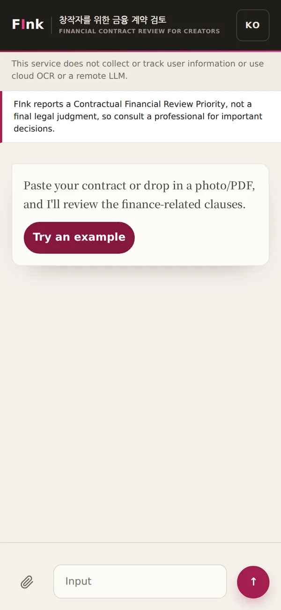
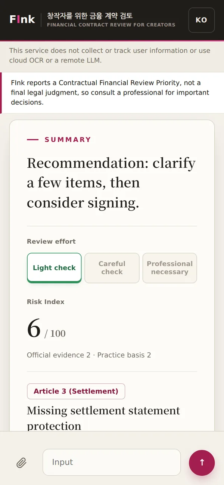
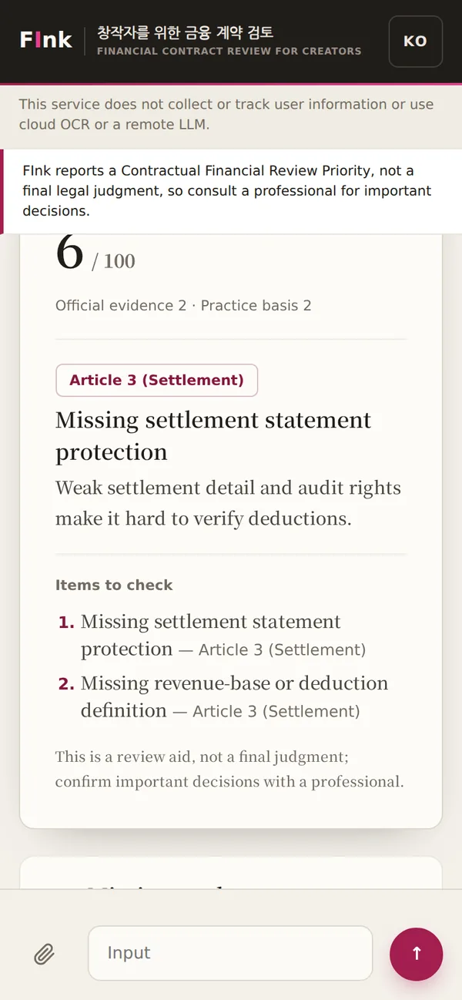

UNIST · IE412 · AI for Finance · 2026 Spring
FInk
A Financial-Risk Review Assistant for Creator Contracts
FInk is an on-device tool for creator contracts…
FInk flags the financial risk in a creator's contract…
Problem
A creator typically receives a contract dense with financial terms…
How it works
FInk detects the financial risk in each clause, grounds it in a curated knowledge base, and builds a prioritized review…
Pipeline
End to end, FInk is a compact RAG pipeline that runs entirely on your device.
Review
FInk returns a prioritized risk review…



Demo
Run the local app, paste or upload a contract, press Analyze, and read the review…
Run it
git clone https://github.com/seonukkim/fink
cd fink
uv sync --extra web
uv run fink-web --host 127.0.0.1 --port 8000
# wait for "Uvicorn running on http://127.0.0.1:8000", then open that addressFull usage, sample contracts, and source: github.com/seonukkim/fink
Citation
@misc{kim2026fink,
author = {Kim, Seonuk},
title = {{FInk}: Selective, Evidence-Gated Cash-Flow Triage for Creator Contracts},
year = {2026},
note = {UNIST IE412 AI for Finance (2026 Spring) final project. Work in progress.},
howpublished = {\url{https://github.com/seonukkim/fink}}
}